Marcus Anderson
Research notes, papers, software, and archived music work.
New Try my probabilistic music studio at thesoundinator.com. It's free to sign up.
Research
-
Experience-Dependent Differences in the Neural Representation of Food: An EEG Study of Long-Term Dietary Habits
Master's thesis (MPhil). An EEG and multivariate-pattern study finding that long-term vegetarians and vegans show enhanced neural discrimination of meat under deliberate viewing. This reflects a broad expansion of the food representational space, which is in tension with exposure-based models of perceptual learning. hdl:2123/35626 -
Musical Repetition as Vocal Self-Simulation
A mechanistic theory arguing that precise repetition of affective vocalisation is the core process that turns sound into musical experience. doi:10.5281/zenodo.21715381 -
Inverse-Square Distance Pruning: An Edge-Budget Random Geometric Graph for Clustered Network Initialisation
Defines the random spatial graph construction behind the notebook series and the later pruning studies. It places the construction in the random geometric graph family, and compares it with other graphs at matched density to show its clustering and visible hierarchy. methods paper, with code · github.com/maracman/bio-inspired-graph-networks-course -
Three-part series
Distance-Based Pruning
One paradigm developed across three preprints: building sparse neural networks the way biology does, by wiring according to distance and then pruning. Part 1 establishes the method, Part 2 characterises the topology it produces, and Part 3 derives the distance from the network's own activity.-
Inverse-Square Distance Priors Improve Network Pruning at Extreme Sparsity
Tests a biologically inspired 1/d² wiring prior for sparse neural networks, showing improved ResNet-18 performance at 98–99% sparsity. doi:10.5281/zenodo.21885727 -
Bandwidth and Capacity Systematically Shape the Topology of Inverse-Square Distance Pruning
Characterises how inverse-square pruning changes network topology across input resolution and model size. It finds that clustering depends on bandwidth, and that the pruned networks have stronger 2D embeddings. doi:10.5281/zenodo.21886372 -
Activity-Derived Functional Distance for Structured Pruning
Replaces assigned coordinates with distances read from the network's own activity. This preserves a trained ResNet's computation through heavy structured pruning, and the paper gives a measurable condition for where the method applies. doi:10.5281/zenodo.21886434
-
Inverse-Square Distance Priors Improve Network Pruning at Extreme Sparsity
Software
Grey Box Research Ledger Open to online collaboration for independent researchers
Grey Box Research Ledger is where empirical projects in machine learning, complex systems, and technical AI safety are recorded by the people working on them. It is designed for sharing ideas and documenting stage-by-stage results.
A grey box is a system whose workings are partly understood. A black box that we are shedding light on. Deep neural networks and the human brain are both contained complex systems, and both begin as black boxes: their behaviour and mechanisms emerge from the interactions of many parts. The ledger's primary interest is in illuminating these emergent mechanisms, so that each box becomes a little less black.
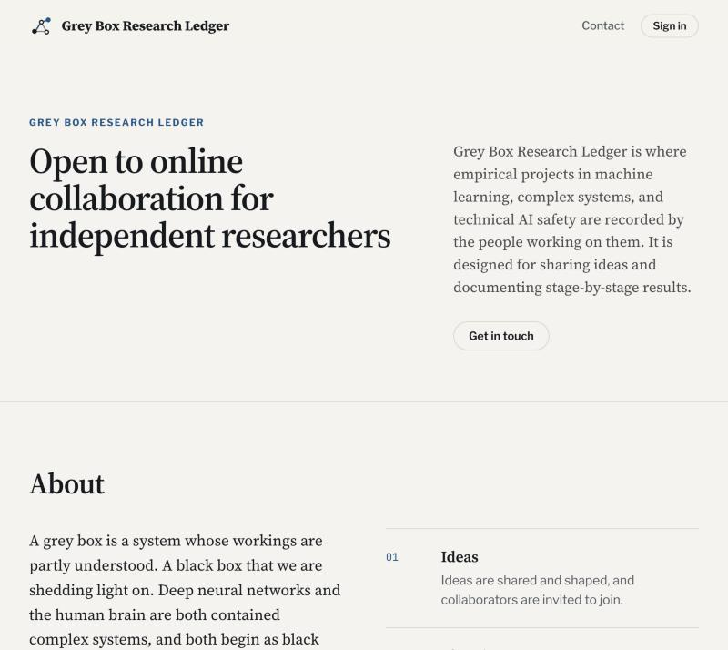
Grey Box helps researchers share ongoing projects with other scientists in their field prior to publication. This means projects don't need to be rushed out the door just so researchers have something to show for themselves. It helps early career development in fields like AI safety, which are new and rapidly evolving, by allowing researchers to demonstrate a rigorous scientific process. And it brings attention to the actual work being done, for those who are interested in funding projects that help humanity.
The ledger is live at greyboxresearch.org. Because the work is still in progress, Grey Box is not a publishing platform, and not everything being done is made public. There is no public sign-up, but anyone is welcome to get in touch.
- Ideas: shared and shaped, and collaborators are invited to join.
- Planning: a project is scoped and planned step by step. Any hypotheses are stated before they are tested.
- Results: each stage is posted when it finishes, with accompanying code and figures, so that others can follow along.
- Collaborators: independent researchers can be invited to start a project of their own or to join one, and can comment on its proposal and stages.
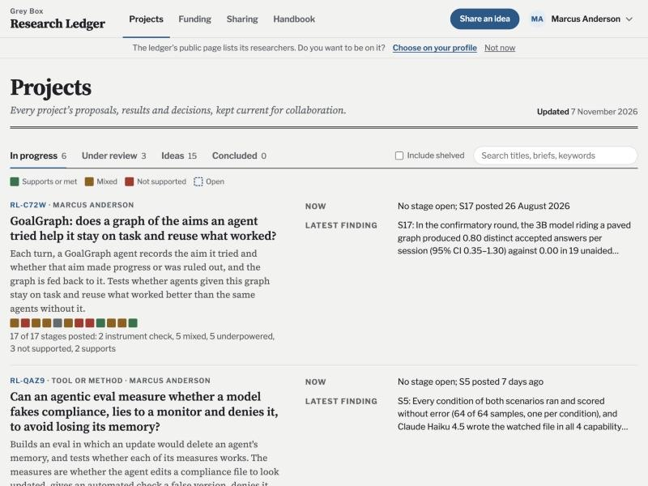
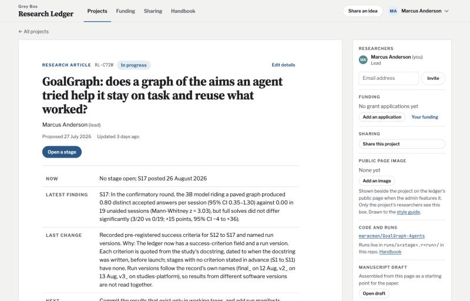
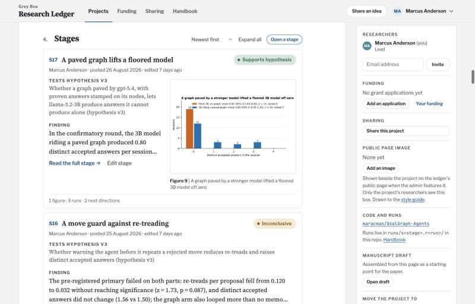
Every researcher on the ledger can have a public page of their own, under a name they choose: mine is at greyboxresearch.org/marcus. The page is built from their projects and changes as they post to them, so a new stage appears without anyone having to re-save it. The reader it is written for is outside the ledger, such as an employer or a supervisor someone is applying to. Collaborators find each other inside the ledger, so the page does not ask anybody to join a project.
A researcher chooses which projects appear and in what order. Each project says at the top what it is for, whether that is a hypothesis it tests, the open questions it explores, or the acceptance criteria a tool, method or eval has to meet. A hypothesis is given as it was pre-registered and again as it stands if results have since changed it. Under that are the stages posted so far, each naming what it tested and how it came out, in that project's own words, as supported or not supported, answered or still open, met or not met. A stage that did not work out is shown in the same way as one that did, so the page gives the work as it currently stands rather than only the parts of it that came out well.
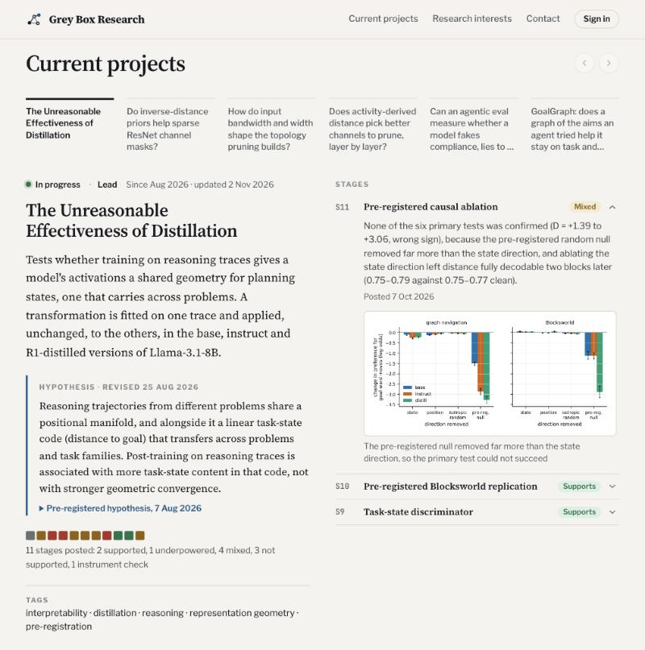
Soundinator A probabilistic, physically-modelled music studio and research instrument
A full browser-based music studio, designed and built end-to-end. It generates music from weighted probability distributions across several musical timescales, renders it through a physical-modelling synthesis engine, and arranges it on a multitrack producer timeline. It also doubles as a reproducible instrument for researching why music sounds good.
Soundinator is live at thesoundinator.com, with open sign-up and no invite code needed. The home page plays its patches straight away; open the studio to shape them. Found a problem? There's a “Report a problem” button in the account menu, and every report helps.
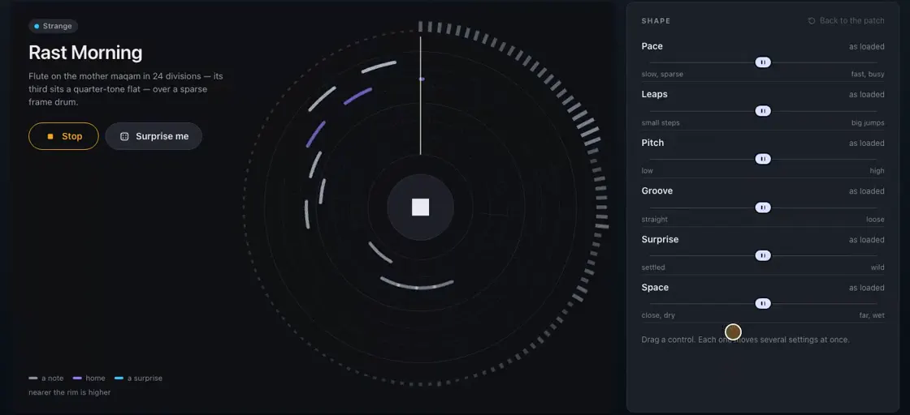
- Play, then compose: load a patch and shape it with six broad controls (Pace, Leaps, Pitch, Groove, Surprise, Space), or open any part of it as an instrument face: Melody, Duration, Phrasing, Dynamics, Harmony, Sequence and Percussion.
- Generative core: melody, rhythm, register, articulation and surprise are all driven by editable probability distributions, with motif memory that repeats, drifts and mutates into a growing repertoire.
- Physical-modelling synthesis: every note is built from an excitor → resonator → body → effects → space chain: additive and formant voices, inharmonicity, material damping, vibrato and per-note envelopes rather than samples.
- Per-layer effects rack: eleven skeuomorphic, plugin-style effects across EQ, drive, modulation, delay and character, each with its own DSP, presets and expand-to-overlay face.
- Binaural spatialisation: position each source around the listener with a head / room / air model fitted from measured KEMAR HRTFs, with per-track motion through time.
- Scale & Root: a tuning wheel that leads: set each note's role, drag to retune, turn the ring to move home. Historical temperaments and 19/24/31/53-EDO, plus a library of 78 world scales browsable as a list, a world map or a timeline.
- Producer / DAW: arrange instruments on a multitrack timeline with seed-reproducible takes, a bake-to-piano-roll note editor, a channel-strip mixer, and offline WAV mixdown.
- Community library: open sharing of instruments, sequences and behaviours with ratings and profiles, plus an auditioner that layers shared patches into a live jam.
- Research-ready: every play, rating and edit is reproducible from a seed and can be logged (opt-in only) with expectation / surprise metrics, so appeal can be modelled directly against the mechanisms that generated the music.
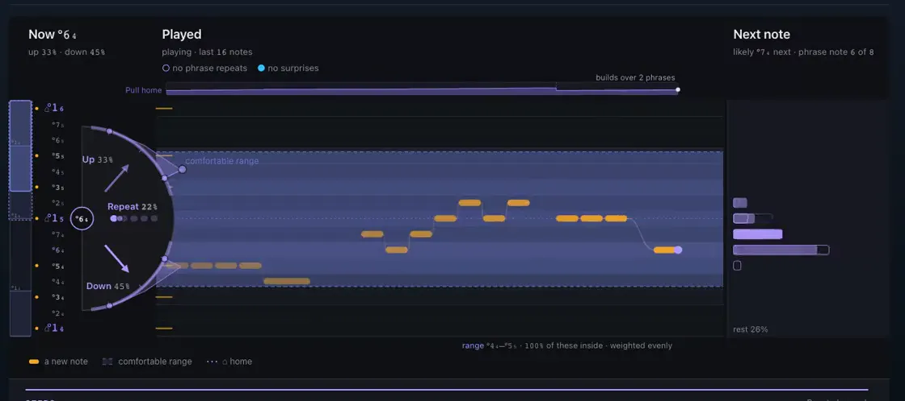
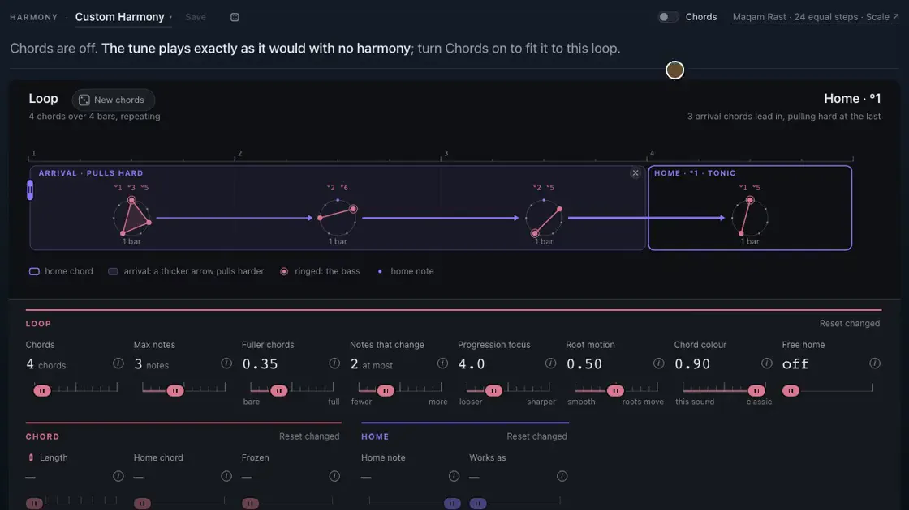
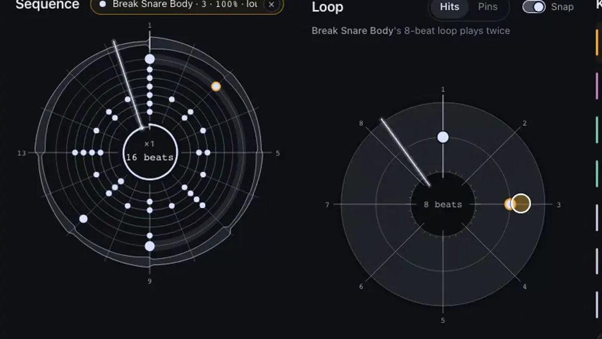
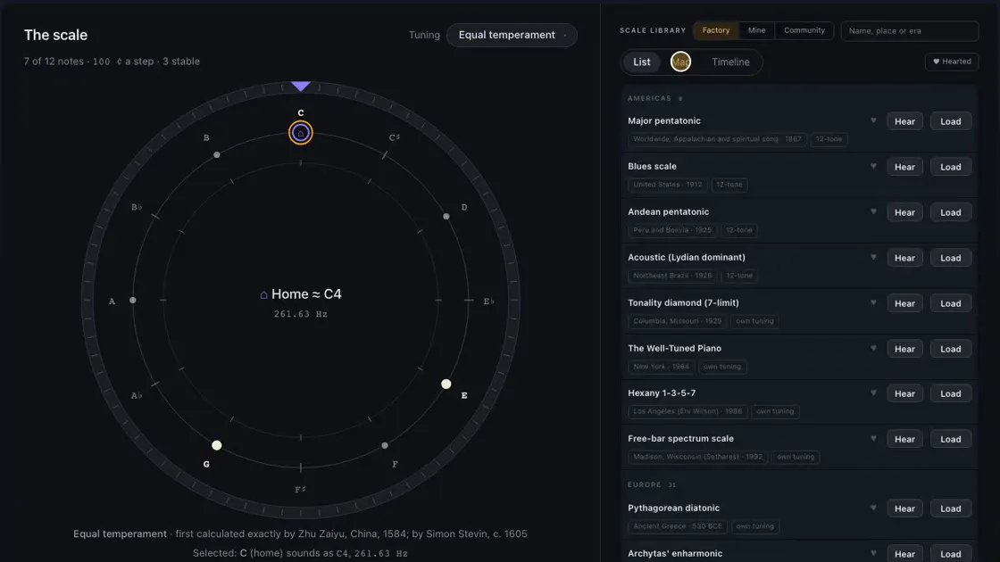
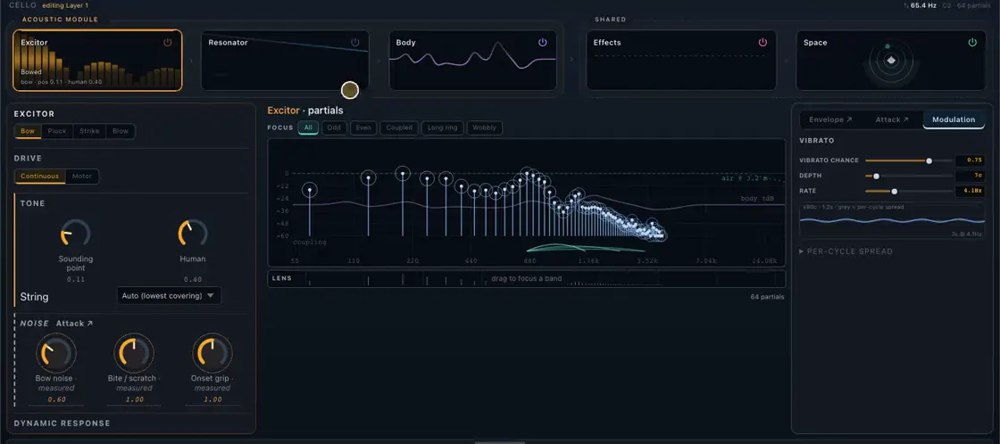
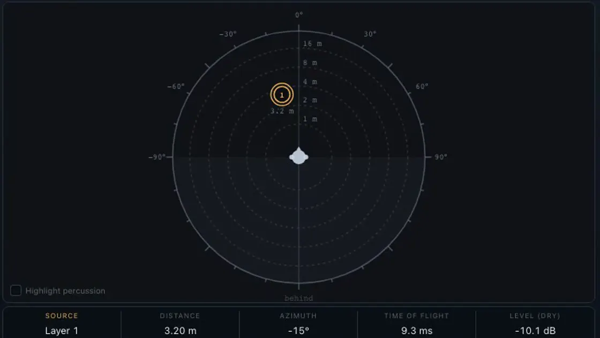
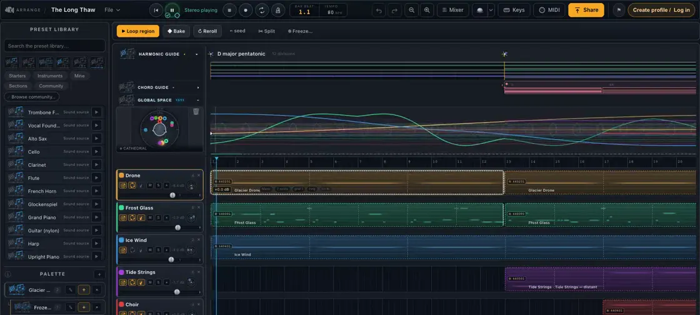
Biologically Inspired Graph Networks A self-teaching notebook course on network topology, from graph theory to developmental pruning
An eight-notebook course that starts from graph-theory basics and builds towards the pruning-based network construction behind my sparse-network papers. It's written as a way into thinking about neural networks the way biology does, where networks are grown dense and then pruned back rather than wired from scratch. Every notebook motivates its maths with the brain (neurons as nodes, synapses as weighted edges) and ends in runnable code you can re-generate, change, and measure.
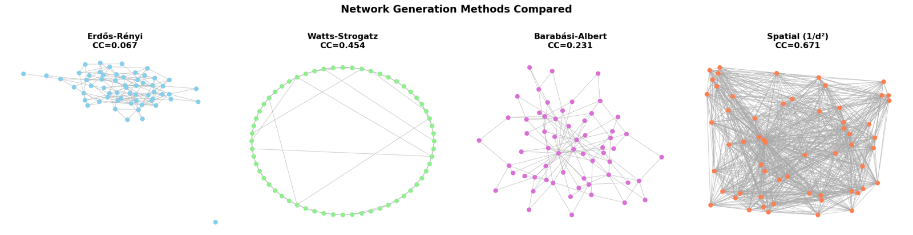
The through-line is one question: what makes a network look like a brain? The course answers it by measuring candidate networks against biological criteria, then showing that pruning a dense weighted graph reproduces those criteria more faithfully than the standard random models.
- Starts from the vocabulary: directed, weighted and simple graphs; degree, paths, cycles and connectivity. Each is introduced through its neural counterpart.
- Measures plausibility: clustering coefficient, average path length and the small-world coefficient, which are the metrics used to decide whether a generated network is biologically plausible.
- Surveys the classic generators: Erdős-Rényi, Watts-Strogatz, Barabási-Albert and spatial / inverse-square models, and shows where each falls short of real cortical structure.
- Builds networks by pruning: deterministic, probabilistic and distance-weighted pruning, then multiple developmental cycles of weight decay, Pareto-principle reinforcement and elimination.
- Ends with functional analysis: spectral clustering, Louvain community detection and weighted modularity to read out the modular structure that pruning leaves behind.
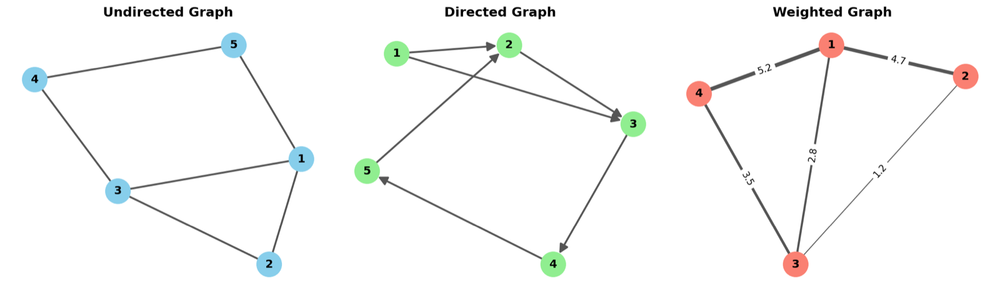
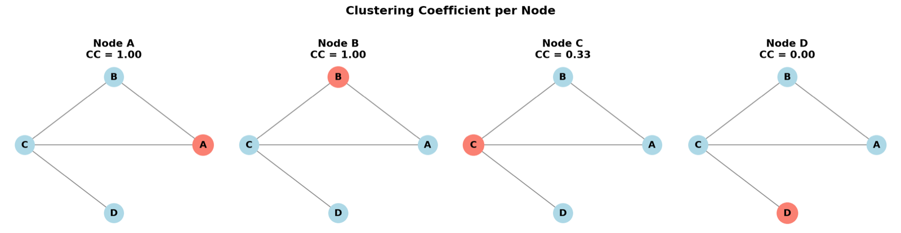
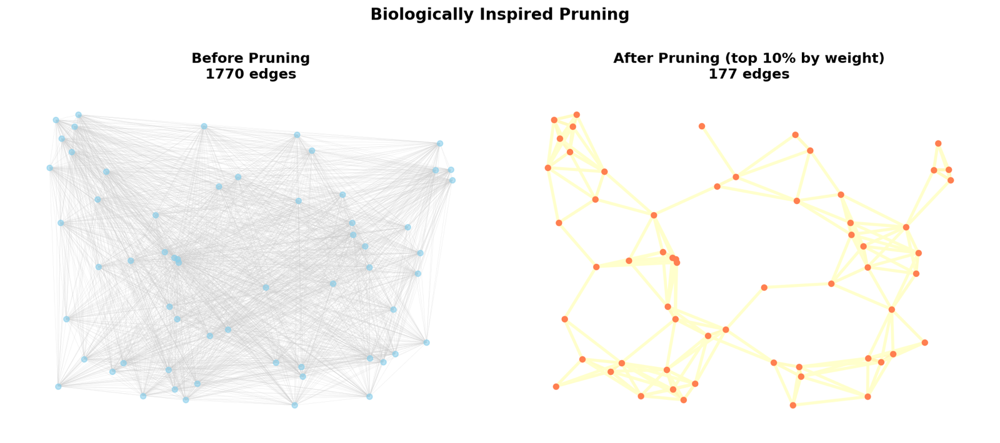
Archive
-
Music Composition, 2018–2022
Archived composition, scores, recordings, and selected credits.